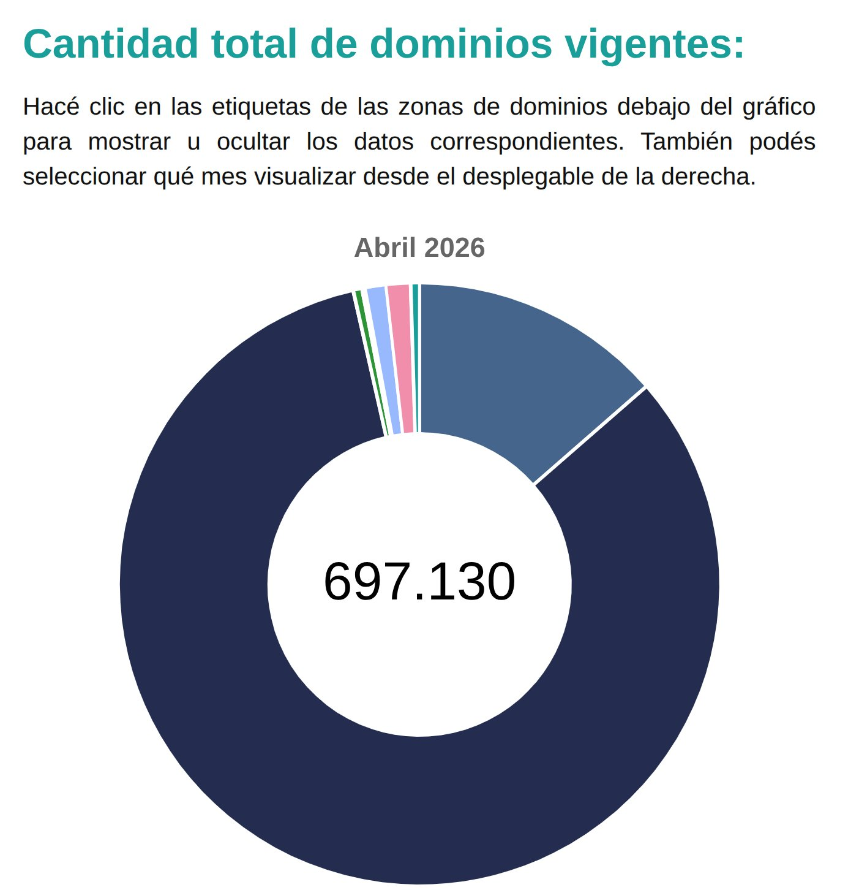
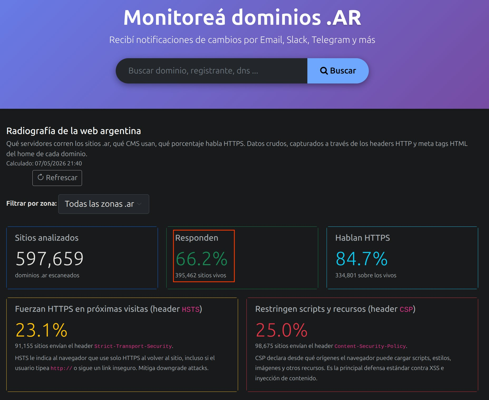
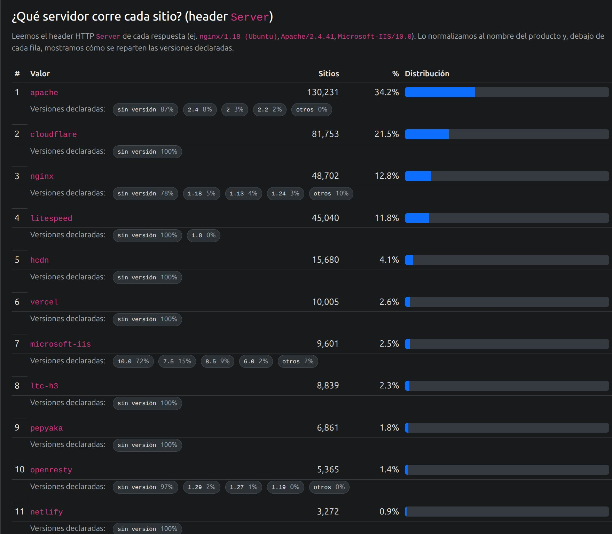
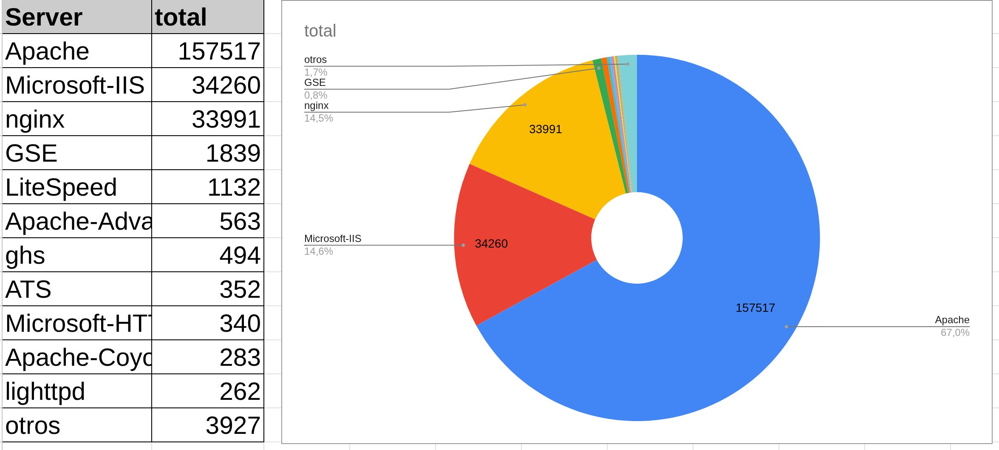
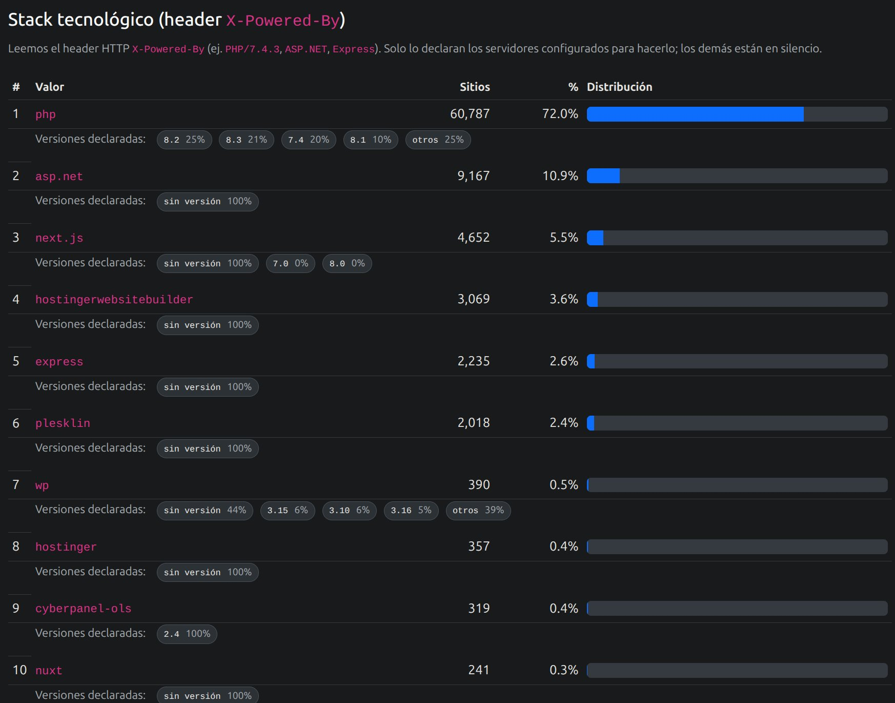
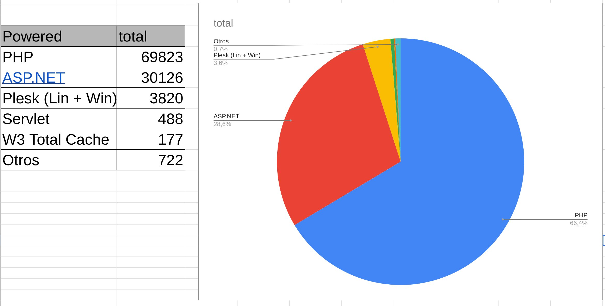
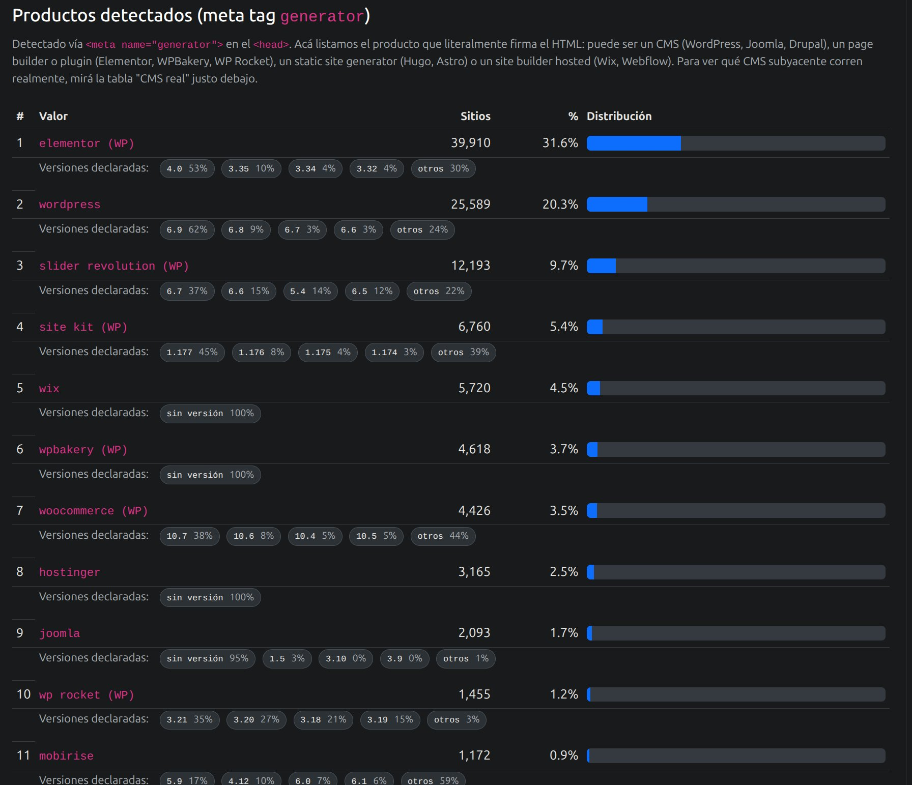
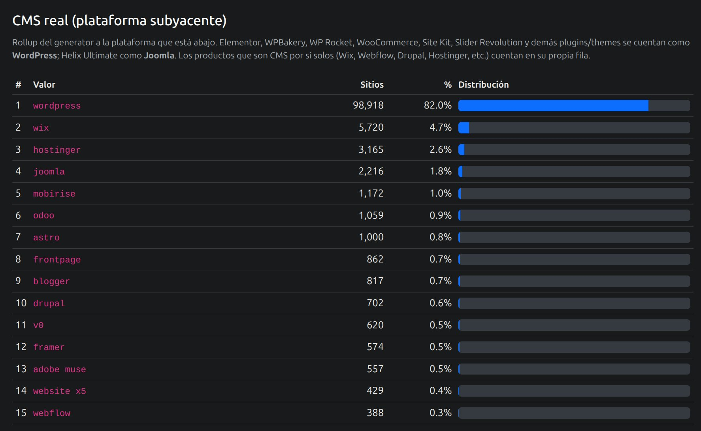

Tecnología detrás de 600.000 dominios argentinos (2026)
Originalmente publicado como hilo en Twitter.
Analizamos casi 600.000 dominios Argentinos. Intentamos hacer una peticion a la home page de cada uno. Conseguimos casi 400k respuestas (66%). Miramos tambien los encabezados de las respuestas y algunas partes del contenido HTML.


Analisis del header server. Si bien el servidor puede responder lo que quiera aquí, estos son nuestros resultados. 380k dominios devolvieron ese encabezado (casi todos). ¿Te sorprende ver a Apache todavía primero? En 2015 era 67% (nuestro análisis anterior).


La novedad es Cloudflare. Para sorpresa de nadie Microsoft IIS cae bruscamente. Nginx se mantiene.
Vamos al header X-Powered-By. La principal novedad aqui es que se esta dejando de usar. Solo 84k de los casi 400k de sitios que respondieron lo usan. Para sorpresa de nadie Mumm-Ra sigue vivo. ASP se desploma.


Vamos al HTML. Analizamos el meta generator. Hay que decir que el 68% de los sitios no lo declara. Son otras cosas. Solo 126k sitios usa algun generador de contenido. Aqui WP y sus amigos lideran. Sorprende que el Wordpress a secas no es el 1°.

Finalmente si los agrupamos podemos decir que el 82% de los sitios generados por algún CMS son Wordpress. Posiblemente PHP sigue vivo solo por esto. ¿Vos que pensas?

Comentarios
Comments powered by Disqus